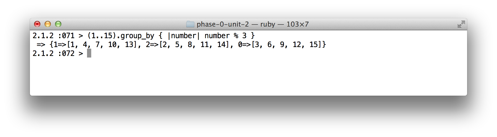
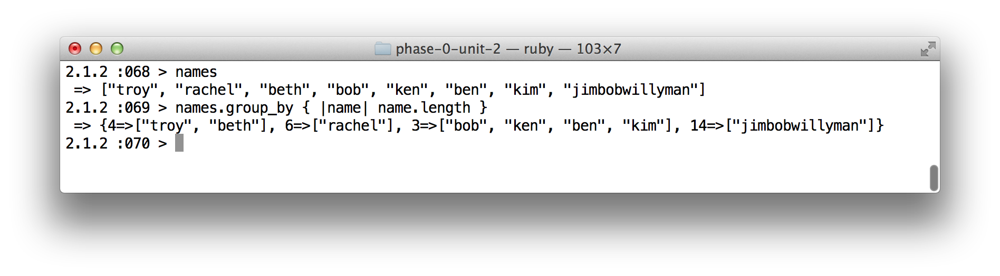
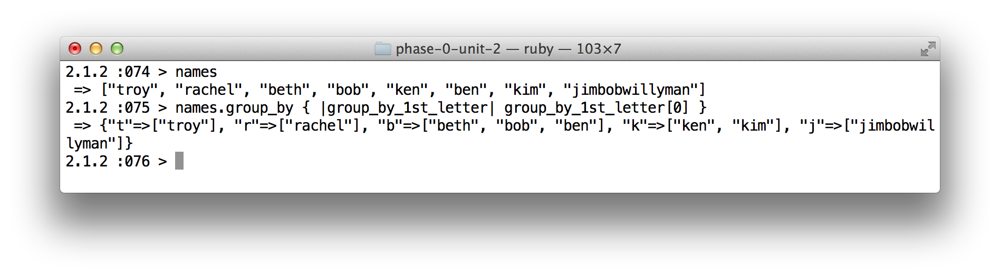
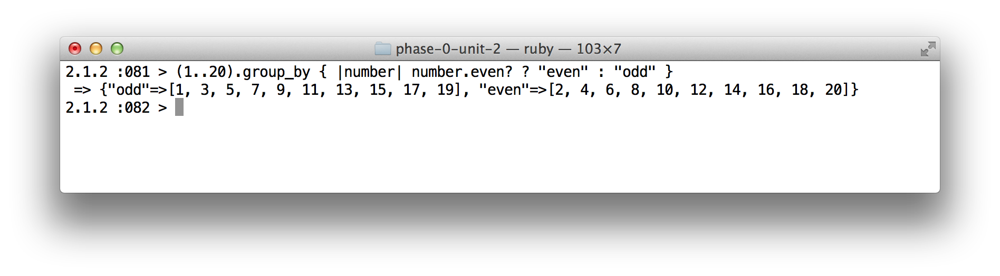
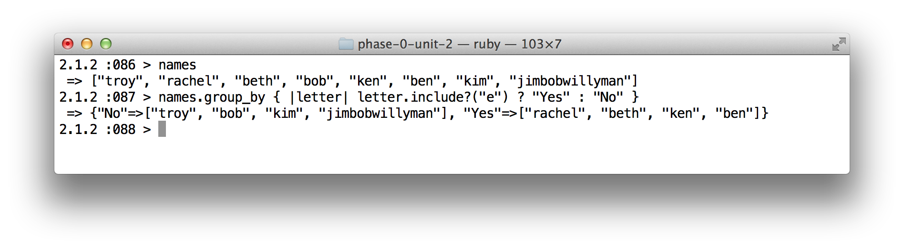

Ruby: Enumerable#group_by
August 29, 2014
group_by { |obj| block } -> a_hash
From ruby-docs.org:
Groups the collection by result of the blocks. Returns a hash where the
keys are the evaluated result from the block and the values are arrays of elements in the
collection that correspond to the key.
If no block is given an enumerator is returned.
I have seen this method in passing doing research on other methods but I really never paid much
attention to it until now.
In the very simplest terms this methods breaks a collection into groups base on some given criteria.
The expectations are a block containing the criteria by which the items in the collection will be grouped. It returns a hash where each key represents a group. Each key's corresponding value is an array containing the members of that group.
When used on an array, group_by iterates through the array, passing each element to the block. The result value of the block is the group into which the element will be placed. In this first example I will use something similar to Ruby-docs:

What is happening in this code is the numbers 1 through 15 are passed to the block, this block receives each number as the parameter number. The group that each number is placed into is determined by the result value of the block, number % 3, whose result can be one of 0, 1, or 2, (keys). so what this means is this:
- key 0 => is an array containing the numbers in the range (1..15) that are evenly divisible by 3
- key 1 => is an array containing the numbers in the range (1..15) that when divided by 3 leave a remainder of 1
- key 2 => is an array containing the numbers in the range (1..15) that when divided by 3 leave a remainder of 2.
In this next example I added jimbobwillyman" to names. In each names name is passed to the block, which receives it as the parameter names. The block's result is the length of names, and this result is the group into which the name will go.

- Note that the keys are integers while the names in the groups are strings.
- The key 4 array, contains those names in
namesthat are 4 charters long. - Key 6 array, contains those names in
namesthat are 6 charters long. - Key 3 array, contains those names in
namesthat are 3 charters long. - Key 14 array... contains those names in
namesthat are 14 charters long.
Check this out, in my next example: 
- Note that the keys are strings AND the names in the groups are strings.
- The key "t" array, contains those names in
namesthat begin with the letter t. - Key "r" array, contains those names in
namesthat begin with the letter r. - Key "b" array, contains those names in
namesthat begin with the letter b. - Key "k" array, contains those names in
namesthat begin with the letter k. - Key "j" array... contains those names in
namesthat begin with the letter j.
Conclusion
From the limited time I spent researching this method, it seems that this best fits with data base manipulation. Visit this site and watch the screen cast. As you can see, using group_by is not difficult and it gives you a very powerful tool. Without this method, you would have to write more complicated and longer code which reduces readability.
I will leave you with this last example... ok well maybe 2...  